Photogallery


EXPEDITON TO SIBERUT – the mysterious island of medicine men
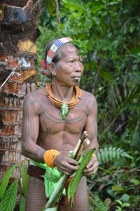
Photo©Petr Jahoda
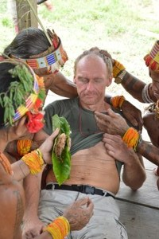
Photo©Petr Jahoda
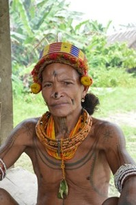
Photo©Petr Jahoda
THE UNIQUE CHANCE TO JOIN THE REAL MEDICAL CEREMONY!
Every participant has got a unique chance to speak to the medicine men, discuss his health troubles and possibly even go through the medicine men treatment!!!
The expedition goes to the heart of the mysterious island of medicine men. Their houses are decorated by monkey skulls and other animal bones. You will see a real medical ceremony. It is a unique chance to see the real medicine men in action. The first treatment was a very strong experience not only for me, but also for my friends. Nobody dared to take pictures even they could. It was very impressive. Unbelievable experience for somebody, who has never seen something like this before! Now there is a chance for you to experience something special. You will be able to take pictures or record the ceremony. No reason to be scared, there is just white magic on Siberut. Parents of the child, who want to become a medicine man, must guarantee that the son will only work with the white magic.
Estimated schedule: 25.Nov. – 11.Dec. 2014
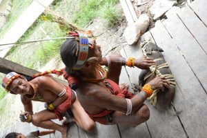
Photo©Petr Jahoda
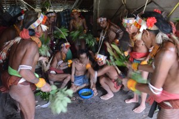
Photo©Petr Jahoda
Once-in-a-life-time experience!!!
The exact time frame will be defined 1–2 months before departure in accordance with the scheduled boat transport to Siberut. Usually it goes there on Wednesdays and back on Thursdays. There is also another expedition planned before Siberut ? The Papua Tree Tribes Expedition. It is possible to combine both expeditions.
For more information please go to: www.JahodaPetr.cz/…ce-2004.html, launch of the magazine CESTOPISY
All pictures here were taken in December 2012
More details:
The expedition goes to the island of half-naked Mentawai people, wild descendants of the cannibals. Mentawai people keep their old customs, they use tattoo to decorate their bodies, sharpen their teeth, hunt with the poisoned arrows and use the monkey skulls to decorate their houses. You will learn about the real jungle, amazing deep forest and Siberut people. The level of difficulty: Medium.
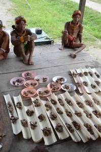
Photo©Petr Jahoda
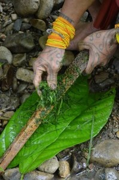
Photo©Petr Jahoda
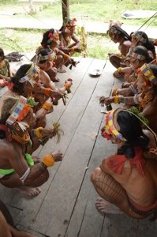
Photo©Petr Jahoda
SIBERUT is a small island in INDIAN OCEAN to the west of SUMATRA, it belongs to Indonesia. It is interesting especially for the life of the NATIVE PEOPLE ? MENTAWAI tribe. THEY KEEP THEIR OLD WAY OF LIVING. Their main food is SAGO. From the palm leaves they create roofs for their houses, women skirts, loincloths. SAGO WORMS is a welcome change of their menu. They eat fish, mollusk, mussels, insect or caterpillars. Sometimes they eat coconuts and ? if they?re lucky ? they have a MONKEY for change. They use BOWS, POISONED ARROWS and spears. They breed poultry and SMALL PIGS ? their most favorite delicacy. Another important material for them is RATAN. They use it to tie all different kinds of things, loincloths as well as the roofs. Mentawai people still KEEP THEIR OLD CUSTOMS. They DECORATE ALL THEIR BODIES with the TATTOO using simple or curved lines, they SHARPEN THEIR TEETH and they still keep the age-long custom to decorate their HOUSE ENTRANCE with the SKULLS – nowadays they use mostly monkey skulls. This culture could survive till these days only thanks to the LUSH VEGETATION of the DEEP TROPICAL RAIN FOREST, where you can find beautiful tropical NEPHENTHES – pitcher plants or so called monkey cups ? the CARNIVOROUS PLANTS. The member of this expedition must be ready to bear the hardships of the long hard walking in the jungle. The level of difficulty is medium in this case. SIBERUT IS THE EASIEST EXPEDITION FROM THE GROUP OF HARD EXPEDITIONS WE OFFER. It can improve your knowledge about the travelling into the rain forest or as it can be considered as training for more difficult expedition – i.e. Papua expedition. It is raining daily on Siberut. The rain usually starts between 2–6pm and lasts till the morning. The average temperature during a day is between 28–35 degrees of Celsius, 22–27 degrees of Celsius in the night. They say that the driest month is May, however as per our experience the climate is more-less the same during the whole year. IN ANY CASE SIBERUT IS BEAUTIFUL IN WARM TROPICAL RAINS. We will sleep in the tents, but on the roof terraces of the big Mentawai houses called Uma.
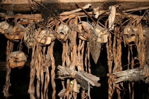
Photo©Petr Jahoda
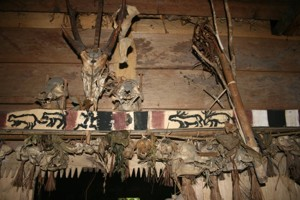
Photo©Petr Jahoda
PLAN OF THE EXPEDITION – 14–17 days
1st – 2nd day – flight to Jakarta
3rd – day – flight to Padang, then we continue by the
wooden boat to Siberut. The voyage is long, but unforgettable. We might have to
wait 1–2 days for the departure. We might use a FERRY instead, if needed.
We?ll do our best so we can leave asap, however in case we must wait there for
the boat, there is a lot of interesting things to see: BUKITTINGGI and its nice
CANYON HARAU VALEY ? it is possible to swim there under the falls. Padanpanjang
with the original houses of MINANGKABAU people. MANINJAU lake and hot springs
ALAMADA.
4th – 13th day – SIBERUT EXPEDITION. We?ll be sailing on
a small boat to the native people. We?ll see the people, who still decorate
their houses with the monkey skulls, decorate their bodies with the tattoo,
sharpen their teeth. We?ll try to get as far as possible into the heart of this
island and see as much as we can. You?ll have an unforgettable experience from
the jungle, you will see the sago production, bow and arrows creation, you might
see the mussels fishing or wild animal hunting. You?ll see the things that you
were dreaming of. We try to understand the way of Mentawai people living. We
take a bath in the Kulukubuk waterfall. You?ll experience AMAZING 6–10 DAYS IN
THE JUNGLE. You think it?s not enough? Believe me, you?ll feel it is more than
enough at the end. Last night we will sail back to Sumatra.
14th – 15th day – flight to Jakarta and flight home.
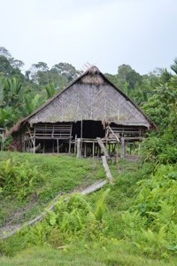
Photo©Petr Jahoda
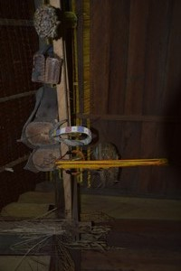
Photo©Petr Jahoda
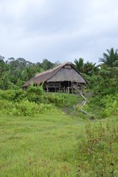
Photo©Petr Jahoda
PRICE for these 14–17 days in the term 25.Nov. – 11.Dec. 2014 is exceptionally low.
What is included in the price: Professional guide, accommodation (sleeping in the tent or in a hut of native people during the expedition, otherwise in hostels or little hotels of medium standard), the local transport – bus, mototaxi, cyklotaxi (if needed), ferryboat Padang – Siberut – Padang, 1× boat on Siberut, permit on Siberut, info materials.
What is not included in the price: Return flight to Jakarta, return flight Jakarta ? Padang approx. USD 200 – 300, airport tax, food approx. USD 100, porter approx. USD 50.
OPTIONAL CHOICES: Flores and Komodo islands: Part of the group will continue from Siberut to Flores island. We?ll see the Keli Mutu volcano with colored lakes. Then we"ll go to Komodo island to see the monitors. We can get some sun-tan on Bali at the end.
Volcano Kerinchi: It"s on Sumatra, not far from Padang. We need 2 days to get on the top + 2 days transport there and back. There is NP Danau Tuju close by, nice park with the forest, 7 lakes on the top. There is a possibility to ride an elephant there. After the return we recommend to take a bath in the hot springs.
Bukit Lawang – orangutans: Going across the lake Toba, visiting the local people with cannibal history and then continue to orangutan sanatorium close by Medan. It is possible to take flight directly to Jakarta from here. This trip takes about a week.
Bukittingy, Harau Valey, etc: Padang and its surroundings is very interesting place. We?ve already mentioned something about this in the Siberut plan above, however there is much more to see. This program can take a week.
Předchozí stránka: Home
Následující stránka: Expeditions